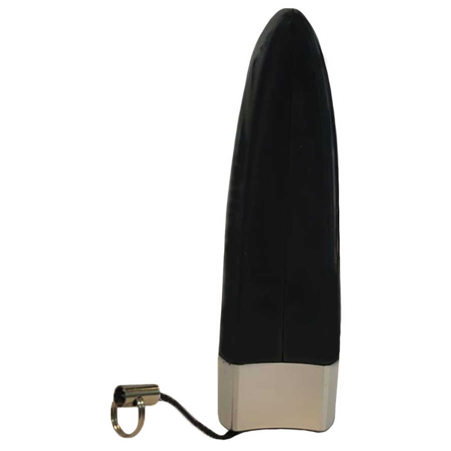

تصفیه کننده هوا خودرو مدل JO1-728

200,000
ريالنقد و بررسی اجمالی
دستگاه تصفیه کننده هوا USB مدل JO-728 با تولید 3 میلیون یون منفی در هر سانتیمتر مکعب و تولید 2 میلیگرم اکسیژن فعال سه ظرفیتی معروف به ازون (O3)در ساعت، هوای اطراف شما در منزل، محل کار و خودرو را مطبوع و از هرگونه آلودگی پاکیزه نگه می دارد. در هوا ذرات با بارهای مثبت و منفی وجود دارند. از تجمع ذرات با بار مثبت، یون مثبت و ذرات با بار منفی، یون منفی تشكیل می شود. بالا بودن میزان یون مثبت در هوا باعث احساس افسردگی، سر درد و سستی و رخوت و... می گردد. تخلیه الكتریكی ولتاژ بالا از طریق عملكرد میله الكترود موجود در دستگاه تصفیه هوا می تواند باعث تولید مقدار زیادی یون منفی گردد. این یون های منفی می توانند به ذرات مسموم معلق در هوا چسبیده و هوا را از وجود آلاینده ها پاك نمایند. این دستگاه با برق 12 ولت تغذیه می کند. دستگاه نیازی به تعویض فیلتر ندارد چرا که با تکنولوژی جدید یونیزاسیون هوا را پاکسازی می نماید. استفاده از این دستگاه باعث كاهش حدود 50% غبار و همچنین کاهش حدود 90% باكتری موجود در اطراف شما می شود.
قدرت بالا و مکش قوی